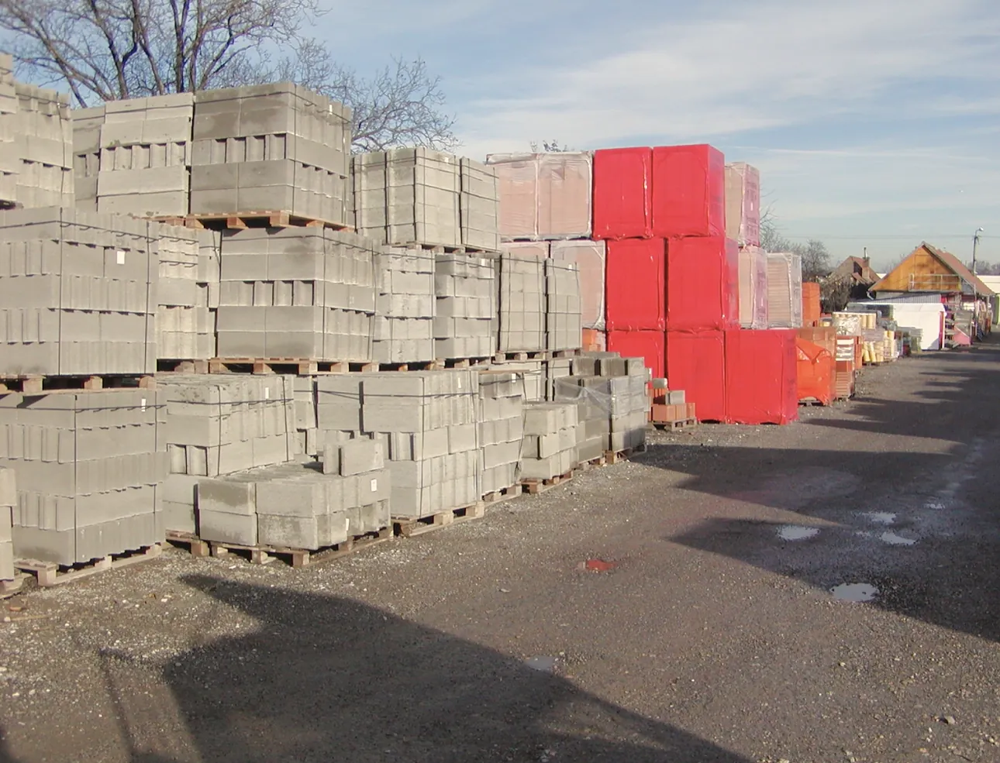
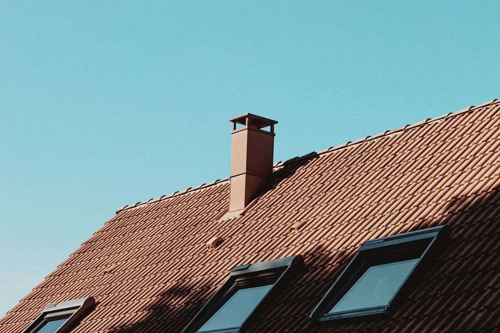
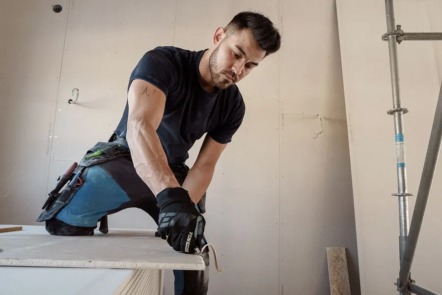

Katalóg stavebného materiálu
15 kategórií a viac ako 40 značiek popredných slovenských aj svetových výrobcov. Vyberte kategóriu alebo hľadajte podľa výrobku alebo značky.


Sypké zmesi
Cement, vápno, malty, omietky, lepidlá, stierky a samonivelačné hmoty.
Baumit, Cemmac, Calmit, Holcim, Murexin, Univerbau
Murovací materiál
Tehly, pórobetónové a betónové tvárnice, preklady a stropné systémy.
Pezinské tehelne, Ytong, Porfix, Betonárka Nadlice
Strešné krytiny
Pálené a betónové škridly, plechové krytiny, asfaltové pásy a príslušenstvo.
Tondach, Bramac, Mediterran, Onduline, Icopal, Blachotrapez
Dlažby a ploty
Zámkové dlažby, terasové platne, obrubníky, palisády a plotové systémy.
City Stone Design, Premac, Stadreko
Izolačný materiál
Minerálna vlna, polystyrén, asfaltové pásy a izolácie proti vode a radónu.
Knauf Insulation, Isover, Nobasil, Icopal, Den Braven, Climowool
Komínové systémy
Certifikované komíny so šamotovou alebo nerezovou vložkou.
Stadreko, Schiedel
Strešné okná
Kyvné a výklopné strešné okná, výlezy, svetlíky, podkrovné schody a doplnky.
Velux, Fakro, RoofLITE
Hutný materiál
Betonárska oceľ, siete, plechy, profily, rúry, zárubne a garážové brány.
Yssel Steel
Dvere a okná
Interiérové, vchodové, bezpečnostné a posuvné dvere, drevené okná s dvojsklom.
Masonite
Stavebné rezivo
Dosky, hranoly, foršne, strešné laty, tatranský profil a krovy na mieru.
Drepex
Náradie a doplnky
Stavebné, elektrické a záhradné náradie, spojovací materiál, mriežky a poklopy.
Slovakia Trend, DS Haco
Podhľady a PVC
Plastové zatrávňovacie dlažby, plotovky, profily, platne a káblové žľaby.
Transform Recykling
Sadrokartón a zateplenie
Suchá výstavba, profily, polystyrén, sklotex, fólie a strešné doplnky.
Stavebné profily, Masterplast
Fasádny systém
Silikónové, silikátové a mozaikové omietky, fasádne farby a zatepľovacie systémy.
Baumit, Univerbau
Farby a laky
Interiérové a fasádne farby, laky, lepidlá, riedidlá a tónovacie systémy.
Het, Chemolak, Chemos, ElastikV našich stavebninách nájdete produkty popredných slovenských aj svetových výrobcov. Systém zliav dohodnutý s výrobcami nám dovoľuje predávať za výhodné ceny stavebným firmám, individuálnym stavebníkom aj spolupracujúcim stavebninám. Materiál dopravíme vlastnou nákladnou dopravou na miesto stavby, ktoré určíte, po celom Slovensku. Stavebný materiál môžete kúpiť aj na splátky cez Quatro a platiť platobnou kartou cez terminál. Cenové ponuky a poradenstvo sú u nás zadarmo.
Nenašli ste, čo hľadáte? Zavolajte, poradíme vám.
Zavolať 0905 622 223